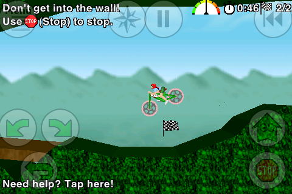

More iPhone games…
Okay, one game in particular this time. One of my favourites from back in my Palm days.
Bike Or Die 2.

It’s awesome. It’s harder than I remember the Palm version being, but that's probably as much because I'm out of practice as anything else. After a couple of weeks of playing the beta version, I’m now at the point where I rarely hit the wrong button, even though they're on-screen instead of being hard buttons.
Not only is it a great game for what it is, but it’s got a ton of user-created levels, and an online high score board (which I’m nowhere near the top of). The re-playability of this game is stunning.
If you're still undecided, you can read the thread about it on TouchArcade. (Yeah, I’ve been answering a bunch of questions over there.) There’s also a video showing gameplay from the beta.
Finally, it only costs $2.99, but I hear it’s going up to $7 after the introductory period is over. (I suggested he sell it for $7.99-$9.99, but he’s apparently a nicer person than I am.)
(No, he’s not paying me for this. Heck, I didn’t even get an iTunes gift certificate for all my hard work finding bugs. I just really like the game.)
Comments
Comments powered by Disqus